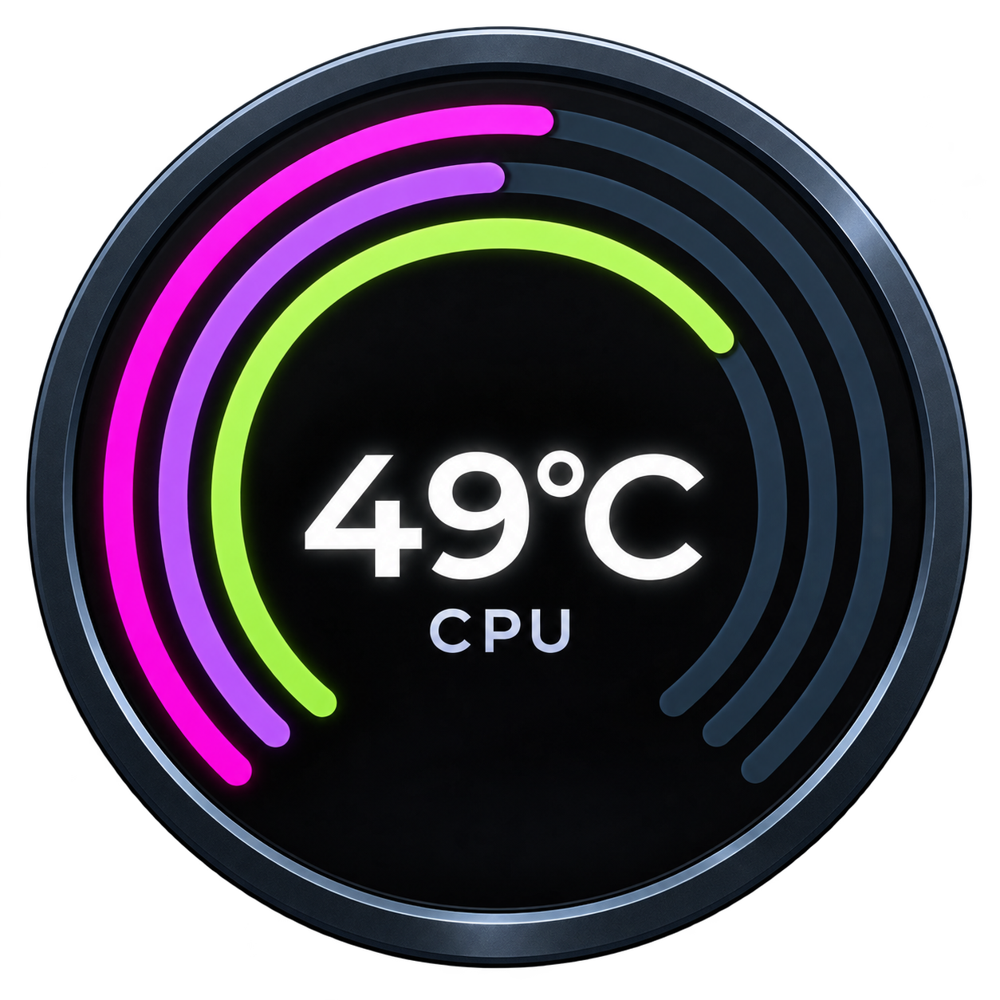
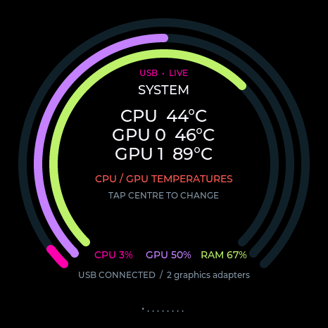
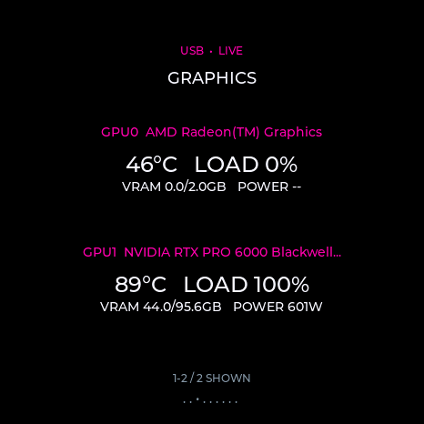
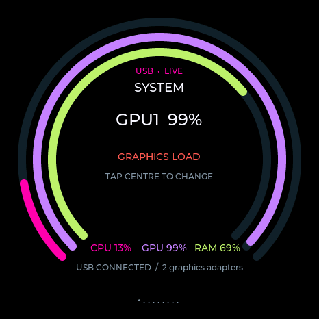

Every GPU, its own summary
Separate temperatures, utilization, memory and available power. Enable the GPUs you want; the activity bar follows that selection.

System CompanionOPEN SOURCE · DEVICE-CARRIED CLIENTS
CPU, GPUs, memory, network and local AI activity on a round AMOLED display. Plug it into another computer. Your theme comes with you.
One self-contained EXE to set up the matching board.
Five offline clients for Windows, Linux and Apple Silicon Macs.

SMALL DISPLAY. USEFUL DETAIL.
Keep the essentials on the display, with the full view in a local dashboard.
Separate temperatures, utilization, memory and available power. Enable the GPUs you want; the activity bar follows that selection.
Themes, brightness, units and display choices live on the ESP32. Applied changes sync to the device and your open dashboards.
The read-only USB drive carries all five native clients. No runtime download, development tools or microSD card is needed.
Recognized local engines can report activity, models and supported metrics. Cloud conversations are not counted as local inference.
Tray or menu-bar controls, bounded background collectors and opt-in startup. Closing the dashboard leaves monitoring running.
An optional microSD card appears as MoniStore, separate from client storage. No automatic card formatting.
A CLEARER VIEW


THE BOARD WE USED
This firmware is made for this board and its wiring. Other ESP32 boards and similar-looking display models need their own port.
Hardware, pinout references and flash layout ↗PLUG IN. INSTALL. MONITOR.
Copy the single EXE to a Windows x64 computer or USB stick.
Exit Monitor and eject MoniStore. Select the display and choose Install / Update.
Launch Windows/Monitor.exe, Linux/Monitor, or macOS/Monitor.app for your computer.
SUPPORT THE PROJECT
Help fund continued development and testing. Donations are optional; every feature stays available.
Support with PayPal ↗